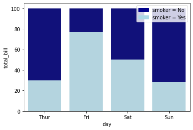
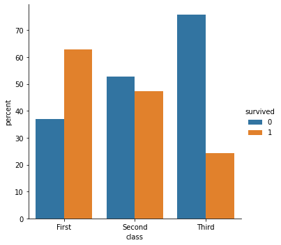
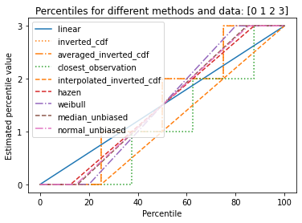
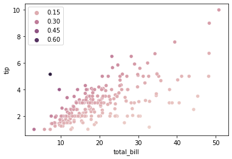
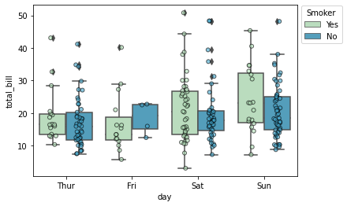

CUT MATERIAL from descriptive statistics#
(DEPRECATED) leftovers from working on the descriptive statistics notebook
see notebooks/13_descriptive_statistics.ipynb for clean version
see figures_generation/descr_stats.ipynb for code to generate figs
Notebooks setup#
import numpy as np
import pandas as pd
import matplotlib.pyplot as plt
import seaborn as sns
# Pandas setup
pd.set_option("display.precision", 2)
Data#
#@title Load CSV data
import io
data_file = io.StringIO("""
student_ID,background,curriculum,effort,score
1,arts,debate,10.96,75
2,science,lecture,8.69,75
3,arts,debate,8.6,67
4,arts,lecture,7.92,70.3
5,science,debate,9.9,76.1
6,business,debate,10.8,79.8
7,science,lecture,7.81,72.7
8,business,lecture,9.13,75.4
9,business,lecture,5.21,57
10,science,lecture,7.71,69
11,business,debate,9.82,70.4
12,arts,debate,11.53,96.2
13,science,debate,7.1,62.9
14,science,lecture,6.39,57.6
15,arts,debate,12,84.3
""")
students = pd.read_csv(data_file, index_col="student_ID")
students
| background | curriculum | effort | score | |
|---|---|---|---|---|
| student_ID | ||||
| 1 | arts | debate | 10.96 | 75.0 |
| 2 | science | lecture | 8.69 | 75.0 |
| 3 | arts | debate | 8.60 | 67.0 |
| 4 | arts | lecture | 7.92 | 70.3 |
| 5 | science | debate | 9.90 | 76.1 |
| 6 | business | debate | 10.80 | 79.8 |
| 7 | science | lecture | 7.81 | 72.7 |
| 8 | business | lecture | 9.13 | 75.4 |
| 9 | business | lecture | 5.21 | 57.0 |
| 10 | science | lecture | 7.71 | 69.0 |
| 11 | business | debate | 9.82 | 70.4 |
| 12 | arts | debate | 11.53 | 96.2 |
| 13 | science | debate | 7.10 | 62.9 |
| 14 | science | lecture | 6.39 | 57.6 |
| 15 | arts | debate | 12.00 | 84.3 |
students['score'].kurtosis()
1.2432566126891702
students['score'].skew()
0.5777104618591472
CUT MATERIAL#
pd.pivot_table(
data=students,
index="curriculum",
columns="background",
values="score", # dummy placeholder
aggfunc="count",
fill_value=0,
margins=True,
)
| background | arts | business | science | All |
|---|---|---|---|---|
| curriculum | ||||
| debate | 4 | 2 | 2 | 8 |
| lecture | 1 | 2 | 4 | 7 |
| All | 5 | 4 | 6 | 15 |
# equivalent using groupby + multiindex
students.groupby(["curriculum", "background"])["background"].count().unstack().fillna(0)
| background | arts | business | science |
|---|---|---|---|
| curriculum | |||
| debate | 4 | 2 | 2 |
| lecture | 1 | 2 | 4 |
sns.heatmap(
pd.crosstab(
index=students["curriculum"],
columns=students["background"],
margins=True,
normalize="index",
margins_name="Total",
),
cmap="Blues"
)
<Axes: xlabel='background', ylabel='curriculum'>

sns.dogplot()
---------------------------------------------------------------------------
KeyboardInterrupt Traceback (most recent call last)
Cell In[10], line 1
----> 1 sns.dogplot()
File /opt/hostedtoolcache/Python/3.10.17/x64/lib/python3.10/site-packages/seaborn/miscplot.py:40, in dogplot(*_, **__)
38 url = "https://github.com/mwaskom/seaborn-data/raw/master/png/img{}.png"
39 pic = np.random.randint(2, 7)
---> 40 data = BytesIO(urlopen(url.format(pic)).read())
41 img = plt.imread(data)
42 f, ax = plt.subplots(figsize=(5, 5), dpi=100)
File /opt/hostedtoolcache/Python/3.10.17/x64/lib/python3.10/urllib/request.py:216, in urlopen(url, data, timeout, cafile, capath, cadefault, context)
214 else:
215 opener = _opener
--> 216 return opener.open(url, data, timeout)
File /opt/hostedtoolcache/Python/3.10.17/x64/lib/python3.10/urllib/request.py:519, in OpenerDirector.open(self, fullurl, data, timeout)
516 req = meth(req)
518 sys.audit('urllib.Request', req.full_url, req.data, req.headers, req.get_method())
--> 519 response = self._open(req, data)
521 # post-process response
522 meth_name = protocol+"_response"
File /opt/hostedtoolcache/Python/3.10.17/x64/lib/python3.10/urllib/request.py:536, in OpenerDirector._open(self, req, data)
533 return result
535 protocol = req.type
--> 536 result = self._call_chain(self.handle_open, protocol, protocol +
537 '_open', req)
538 if result:
539 return result
File /opt/hostedtoolcache/Python/3.10.17/x64/lib/python3.10/urllib/request.py:496, in OpenerDirector._call_chain(self, chain, kind, meth_name, *args)
494 for handler in handlers:
495 func = getattr(handler, meth_name)
--> 496 result = func(*args)
497 if result is not None:
498 return result
File /opt/hostedtoolcache/Python/3.10.17/x64/lib/python3.10/urllib/request.py:1391, in HTTPSHandler.https_open(self, req)
1390 def https_open(self, req):
-> 1391 return self.do_open(http.client.HTTPSConnection, req,
1392 context=self._context, check_hostname=self._check_hostname)
File /opt/hostedtoolcache/Python/3.10.17/x64/lib/python3.10/urllib/request.py:1348, in AbstractHTTPHandler.do_open(self, http_class, req, **http_conn_args)
1346 try:
1347 try:
-> 1348 h.request(req.get_method(), req.selector, req.data, headers,
1349 encode_chunked=req.has_header('Transfer-encoding'))
1350 except OSError as err: # timeout error
1351 raise URLError(err)
File /opt/hostedtoolcache/Python/3.10.17/x64/lib/python3.10/http/client.py:1283, in HTTPConnection.request(self, method, url, body, headers, encode_chunked)
1280 def request(self, method, url, body=None, headers={}, *,
1281 encode_chunked=False):
1282 """Send a complete request to the server."""
-> 1283 self._send_request(method, url, body, headers, encode_chunked)
File /opt/hostedtoolcache/Python/3.10.17/x64/lib/python3.10/http/client.py:1329, in HTTPConnection._send_request(self, method, url, body, headers, encode_chunked)
1325 if isinstance(body, str):
1326 # RFC 2616 Section 3.7.1 says that text default has a
1327 # default charset of iso-8859-1.
1328 body = _encode(body, 'body')
-> 1329 self.endheaders(body, encode_chunked=encode_chunked)
File /opt/hostedtoolcache/Python/3.10.17/x64/lib/python3.10/http/client.py:1278, in HTTPConnection.endheaders(self, message_body, encode_chunked)
1276 else:
1277 raise CannotSendHeader()
-> 1278 self._send_output(message_body, encode_chunked=encode_chunked)
File /opt/hostedtoolcache/Python/3.10.17/x64/lib/python3.10/http/client.py:1038, in HTTPConnection._send_output(self, message_body, encode_chunked)
1036 msg = b"\r\n".join(self._buffer)
1037 del self._buffer[:]
-> 1038 self.send(msg)
1040 if message_body is not None:
1041
1042 # create a consistent interface to message_body
1043 if hasattr(message_body, 'read'):
1044 # Let file-like take precedence over byte-like. This
1045 # is needed to allow the current position of mmap'ed
1046 # files to be taken into account.
File /opt/hostedtoolcache/Python/3.10.17/x64/lib/python3.10/http/client.py:976, in HTTPConnection.send(self, data)
974 if self.sock is None:
975 if self.auto_open:
--> 976 self.connect()
977 else:
978 raise NotConnected()
File /opt/hostedtoolcache/Python/3.10.17/x64/lib/python3.10/http/client.py:1448, in HTTPSConnection.connect(self)
1445 def connect(self):
1446 "Connect to a host on a given (SSL) port."
-> 1448 super().connect()
1450 if self._tunnel_host:
1451 server_hostname = self._tunnel_host
File /opt/hostedtoolcache/Python/3.10.17/x64/lib/python3.10/http/client.py:942, in HTTPConnection.connect(self)
940 """Connect to the host and port specified in __init__."""
941 sys.audit("http.client.connect", self, self.host, self.port)
--> 942 self.sock = self._create_connection(
943 (self.host,self.port), self.timeout, self.source_address)
944 # Might fail in OSs that don't implement TCP_NODELAY
945 try:
File /opt/hostedtoolcache/Python/3.10.17/x64/lib/python3.10/socket.py:845, in create_connection(address, timeout, source_address)
843 if source_address:
844 sock.bind(source_address)
--> 845 sock.connect(sa)
846 # Break explicitly a reference cycle
847 err = None
KeyboardInterrupt:
# import libraries
import seaborn as sns
import numpy as np
import matplotlib.pyplot as plt
import matplotlib.patches as mpatches
# load dataset
tips = sns.load_dataset("tips")
# set the figure size
# plt.figure(figsize=(14, 14))
# from raw value to percentage
total = tips.groupby('day')['total_bill'].sum().reset_index()
smoker = tips[tips.smoker=='Yes'].groupby('day')['total_bill'].sum().reset_index()
smoker['total_bill'] = [i / j * 100 for i,j in zip(smoker['total_bill'], total['total_bill'])]
total['total_bill'] = [i / j * 100 for i,j in zip(total['total_bill'], total['total_bill'])]
# bar chart 1 -> top bars (group of 'smoker=No')
bar1 = sns.barplot(x="day", y="total_bill", data=total, color='darkblue')
# bar chart 2 -> bottom bars (group of 'smoker=Yes')
bar2 = sns.barplot(x="day", y="total_bill", data=smoker, color='lightblue')
# add legend
top_bar = mpatches.Patch(color='darkblue', label='smoker = No')
bottom_bar = mpatches.Patch(color='lightblue', label='smoker = Yes')
plt.legend(handles=[top_bar, bottom_bar])
# show the graph
plt.show()

df = sns.load_dataset('titanic')
(df
.groupby('class')['survived']
.value_counts(normalize=True)
.mul(100)
.rename('percent')
.reset_index()
.pipe((sns.catplot, 'data'), x='class', y='percent', hue='survived', kind='bar')
)
<seaborn.axisgrid.FacetGrid at 0x130767040>

import matplotlib.pyplot as plt
a = np.arange(4)
p = np.linspace(0, 100, 6001)
ax = plt.gca()
lines = [
('linear', '-', 'C0'),
('inverted_cdf', ':', 'C1'),
# Almost the same as `inverted_cdf`:
('averaged_inverted_cdf', '-.', 'C1'),
('closest_observation', ':', 'C2'),
('interpolated_inverted_cdf', '--', 'C1'),
('hazen', '--', 'C3'),
('weibull', '-.', 'C4'),
('median_unbiased', '--', 'C5'),
('normal_unbiased', '-.', 'C6'),
]
for method, style, color in lines:
ax.plot(
p, np.percentile(a, p, method=method),
label=method, linestyle=style, color=color
)
ax.set(
title='Percentiles for different methods and data: ' + str(a),
xlabel='Percentile',
ylabel='Estimated percentile value',
yticks=a
)
ax.legend()
plt.show()

import numpy as np
tips = sns.load_dataset("tips")
tip_rate = tips.eval("tip / total_bill")
ax = sns.scatterplot(data=tips, x="total_bill", y="tip", hue=tip_rate)

tips.assign(tip_rate=tips.eval("tip / total_bill"))
| total_bill | tip | sex | smoker | day | time | size | tip_rate | |
|---|---|---|---|---|---|---|---|---|
| 0 | 16.99 | 1.01 | Female | No | Sun | Dinner | 2 | 0.06 |
| 1 | 10.34 | 1.66 | Male | No | Sun | Dinner | 3 | 0.16 |
| 2 | 21.01 | 3.50 | Male | No | Sun | Dinner | 3 | 0.17 |
| 3 | 23.68 | 3.31 | Male | No | Sun | Dinner | 2 | 0.14 |
| 4 | 24.59 | 3.61 | Female | No | Sun | Dinner | 4 | 0.15 |
| ... | ... | ... | ... | ... | ... | ... | ... | ... |
| 239 | 29.03 | 5.92 | Male | No | Sat | Dinner | 3 | 0.20 |
| 240 | 27.18 | 2.00 | Female | Yes | Sat | Dinner | 2 | 0.07 |
| 241 | 22.67 | 2.00 | Male | Yes | Sat | Dinner | 2 | 0.09 |
| 242 | 17.82 | 1.75 | Male | No | Sat | Dinner | 2 | 0.10 |
| 243 | 18.78 | 3.00 | Female | No | Thur | Dinner | 2 | 0.16 |
244 rows × 8 columns
import seaborn as sns
# load the dataframe
tips = sns.load_dataset('tips')
ax = sns.boxplot(x="day", y="total_bill", hue="smoker", data=tips, palette="GnBu", zorder=0)
# add stripplot with dodge=True
sns.stripplot(x="day", y="total_bill", hue="smoker", data=tips, palette="GnBu",
dodge=True, ax=ax, ec='k', linewidth=1, alpha=0.6)
# remove extra legend handles
handles, labels = ax.get_legend_handles_labels()
ax.legend(handles[:2], labels[:2], title='Smoker', bbox_to_anchor=(1, 1.02), loc='upper left')
<matplotlib.legend.Legend at 0x10f523250>

# Fancy descriptiv statistics
# import pandas_profiling
# students.profile_report()